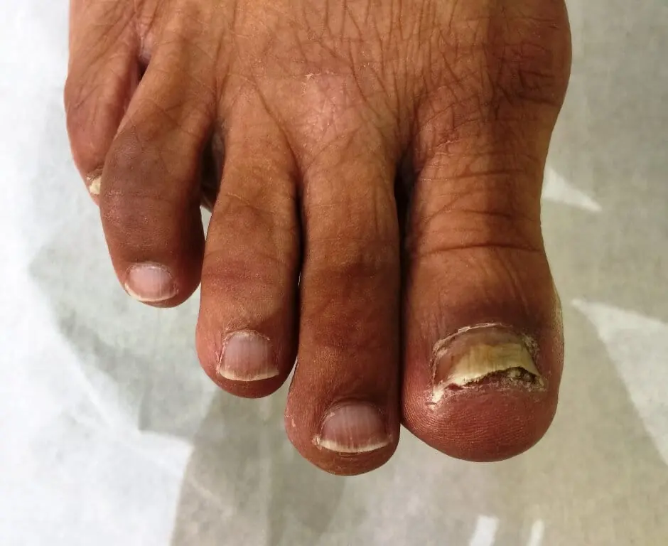
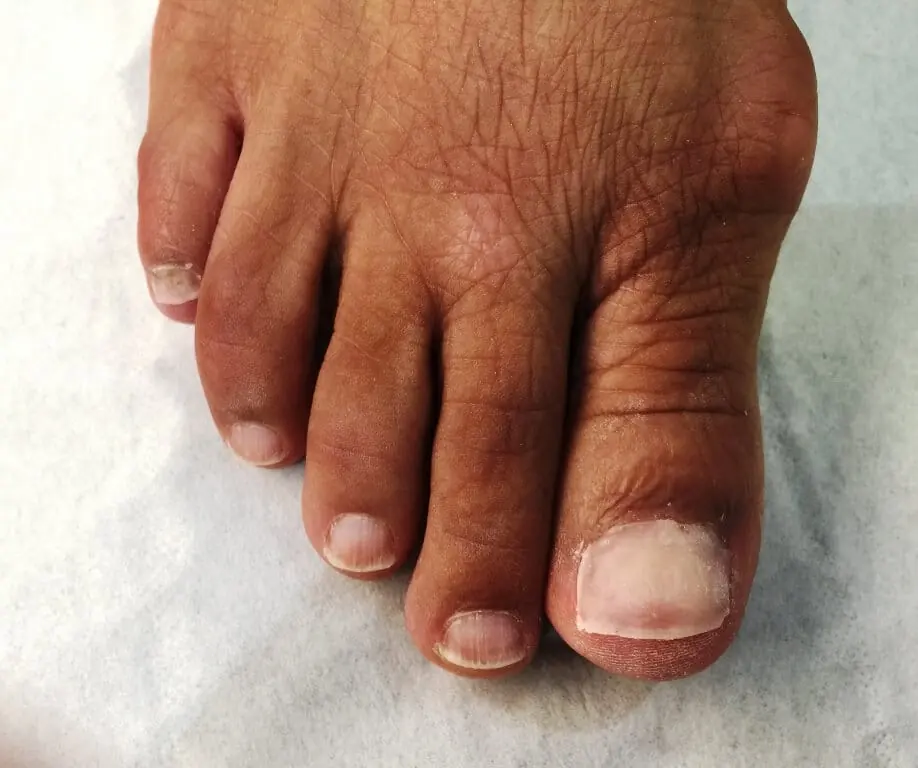

Toenail Reconstructions
 Does the appearance of your toenails embarrass you and stop you taking off your shoes and socks, whilst swimming, on the beach or just at home when relaxing? Or do your nails prevent you from wearing open toe sandals? Would you love to show off your beautiful toenails? We can help with all of these situations, for both men and women.
Does the appearance of your toenails embarrass you and stop you taking off your shoes and socks, whilst swimming, on the beach or just at home when relaxing? Or do your nails prevent you from wearing open toe sandals? Would you love to show off your beautiful toenails? We can help with all of these situations, for both men and women.
Wilde-Pedique is an extremely strong, elastic gel which sets when exposed to UV light. It’s been developed specifically for restoring damaged toenails which can then be painted if required.
Once set by UV light, the toenail will look just like a normal nail, you can cut it as you would your other nails and it will last for up to 2-3 months. It is effective on discoloured and deformed nails, hiding those embarrassing areas of irregularity. The gel adds protection if there has been trauma or loss of part or the whole nail. The gel nail reduces friction and pressure on the exposed skin underneath the nail.
Here are the results of a successful nail reconstruction:


[scriptless]